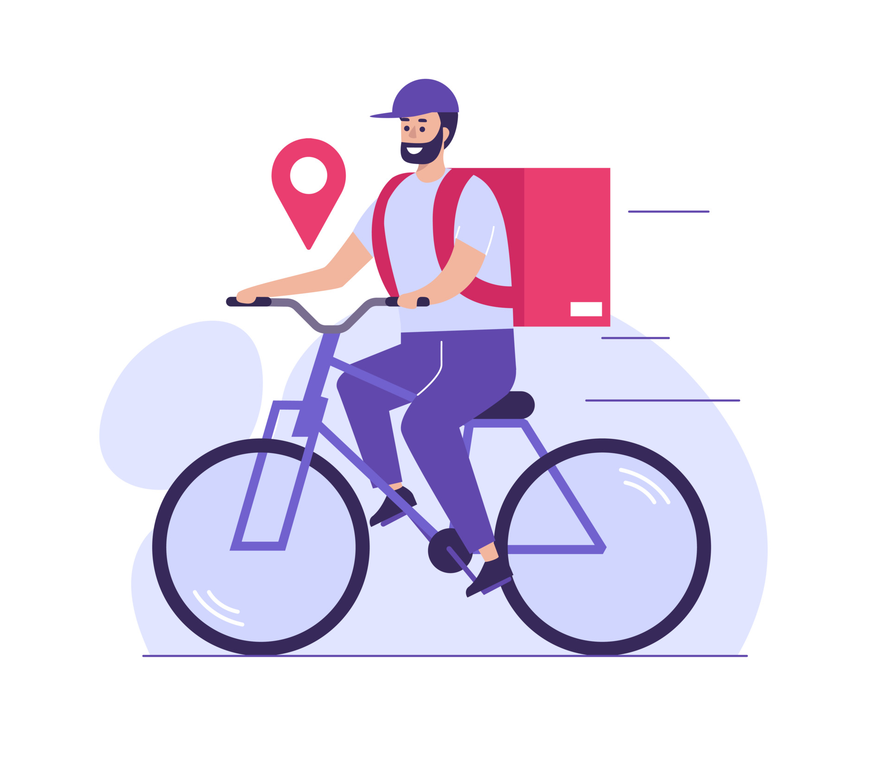

Logística urbana com impacto positivo
Entregas rápidas e sustentáveis para o seu negócio
Reduza a pegada de carbono da sua empresa com entregas 100% feitas de bicicleta. Eficiência e sustentabilidade juntas.
Como Funciona
1. Pedido
Seu cliente faz o pedido no seu canal de vendas habitual.
2. Rota Ecológica
Nosso sistema otimiza a rota de entrega urbana por ciclovias.
3. Entrega Sustentável
Nosso entregador parceiro leva o pedido com zero emissão de gases.
Raio de Cobertura
Atendemos Santo Antônio de Jesus e bairros comerciais com rapidez e agilidade.
Nossos Diferenciais
Zero Emissão de CO2
Contribua ativamente para um ar mais limpo nas cidades.
Frota em Bicicletas
Agilidade no trânsito urbano sem depender de combustíveis fósseis.
Embalagens Sustentáveis
Incentivo ao uso de materiais biodegradáveis e recicláveis.
Tempo Real
Acompanhe o status do envio com transparência total.

Escolhas que circulam
Mais que uma entrega: um jeito melhor de ocupar a cidade.
Rotas de bicicleta aproximam negócios e pessoas, reduzem o trânsito e ajudam a construir bairros mais leves para todos.
.jpg)
A cidade é o nosso caminho
Logística sustentável que você consegue ver.
Cada pedido é levado de bicicleta, com menos emissões e mais proximidade entre o comércio local e seus clientes.